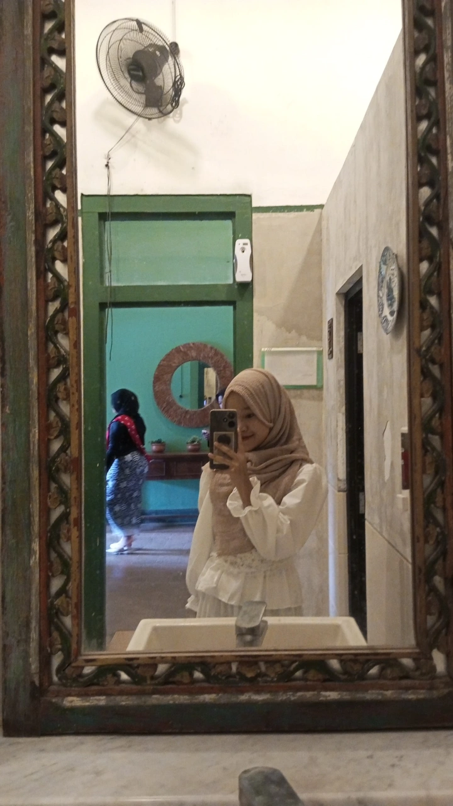
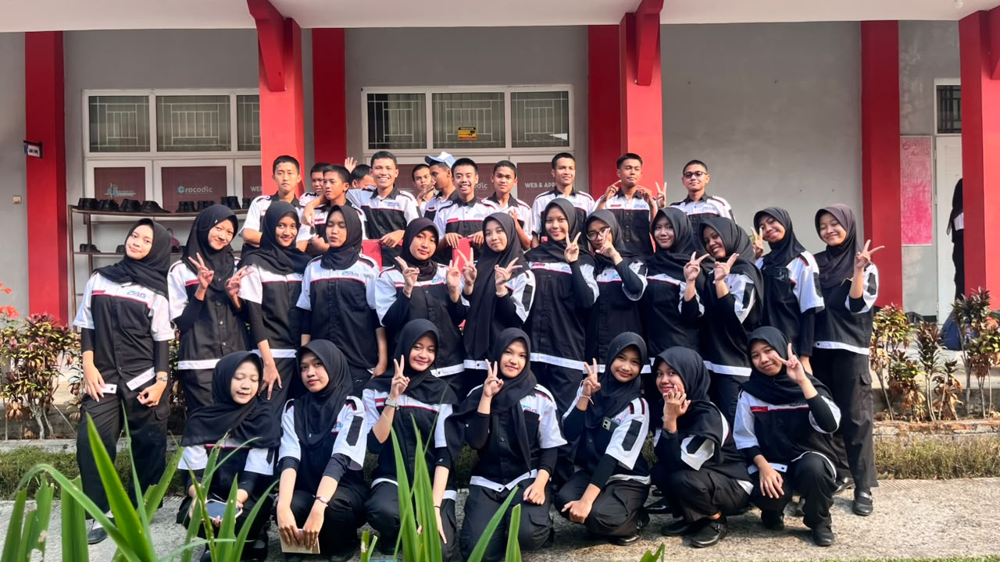
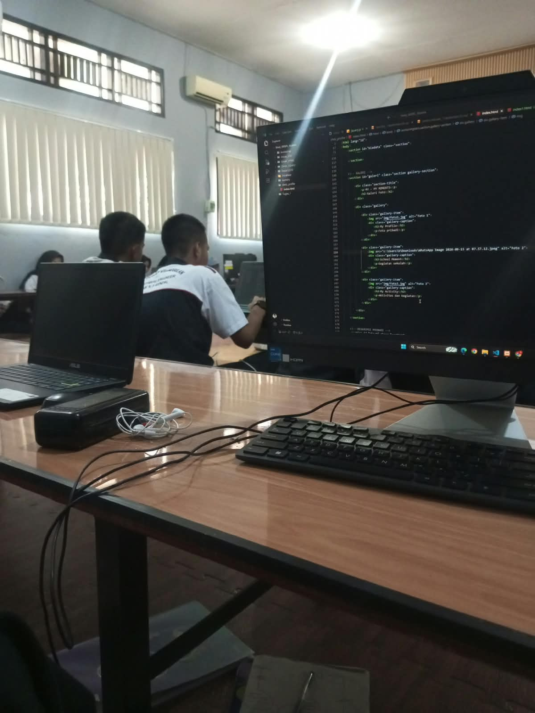
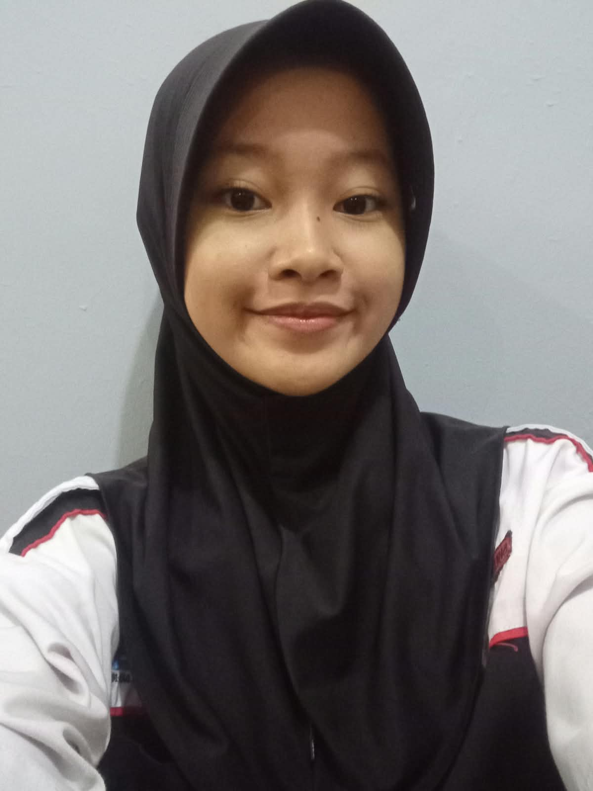

WELCOME TO MY PROFILE
Saya adalah seorang pelajar SMK Negeri 3 Kendal yang memiliki ketertarikan pada teknologi, pemrograman, database, dan pengembangan website.
Lihat Profil
01 — ABOUT ME
Halo! Nama saya Shely Anjalika. Saya adalah siswa kelas XI RPL 1 di SMK Negeri 3 Kendal. Saya memiliki rasa ingin tahu yang tinggi dan senang mempelajari hal-hal baru, terutama yang berhubungan dengan komputer dan teknologi.
Saya juga suka mencoba menyelesaikan masalah ketika belajar pemrograman dan database. Walaupun masih terus belajar, saya ingin mengembangkan kemampuan saya agar semakin baik di bidang teknologi.
02 — MY MOMENTS

Kegiatan sekolah

Praktikum pemrograman

Aktivitas Kejuruan
03 — PERSONALITY
Saya termasuk orang yang cukup tenang ketika menghadapi suatu masalah dan berusaha mencari solusi dengan baik.
Saya senang mempelajari sesuatu yang baru dan memiliki rasa ingin tahu yang cukup tinggi.
Saya berusaha menyelesaikan tugas tepat waktu dan terus belajar ketika menemukan sesuatu yang belum saya pahami.
04 — EDUCATION
Menempuh dan menyelesaikan pendidikan tingkat Sekolah Dasar.
Menempuh dan menyelesaikan pendidikan tingkat Sekolah Menengah Pertama.
Program Keahlian Pengembangan Perangkat Lunak dan Gim dengan fokus Rekayasa Perangkat Lunak.
05 — EXPERIENCE
06 — MY STRENGTHS
07 — ACHIEVEMENT
Aktif mengembangkan kemampuan di bidang teknologi, khususnya pemrograman, database SQL, dan pengembangan website melalui pembelajaran di sekolah.
08 — MY SKILLS
Membuat struktur dasar dan halaman website menggunakan HTML.
Mengatur tampilan, warna, layout, dan desain halaman website.
Membuat database, tabel, dan melakukan pengolahan data menggunakan SQL.
Memahami dasar pemrograman dan mencoba menyelesaikan masalah menggunakan kode.
09 — MY WORK
DATABASE
Membuat rancangan database menggunakan tabel, relasi, dan SQL.
View Project →UI DESIGN
Membuat rancangan tampilan website dengan memperhatikan layout dan user experience.
View Project →